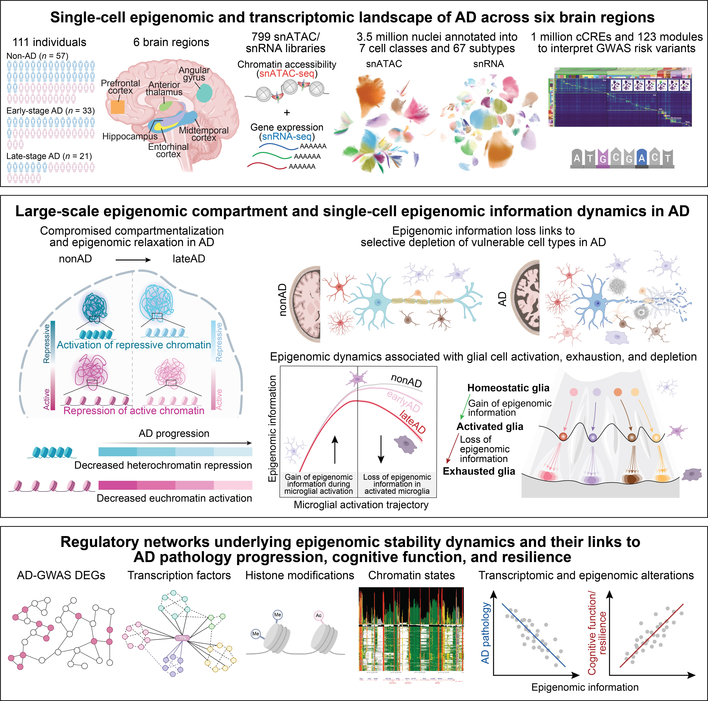

We systematically decode the molecular and regulatory circuitry of brain aging and neurodegeneration, and translate mechanistic insights into predictive biomarkers, rejuvenation strategies, and AI-driven therapeutic design.
By integrating large-scale single-cell multi-omics, cross-layer regulatory circuitry analyses, human disease genetics and clinical informatics, and AI/ML-driven modeling, we study the genetic and epigenomic mechanisms that govern regulatory networks and intercellular communication — and how their disruption drives cellular vulnerability and dysfunction in aging and neurodegenerative conditions.
A closed-loop framework linking mechanism discovery, rejuvenation, and therapeutic development.
Systems-level decoding of where, which, how, and when regulation systems fail across aging and neurodegeneration.
Restoring cellular and tissue function to counter degeneration through epigenomic stabilization and cellular regeneration.
AI-enabled prediction, perturbation, cross-modal generation, and therapeutic design with translational potential.
Systems-level decoding of aging and neurodegeneration — defining where, which, how, and when regulation systems fail across cell populations, molecular layers, and temporal dynamics (lifetime and circadian scales).
From degeneration to regeneration — restoring cellular and tissue function to counter degeneration. An integrative framework bridging single-cell genomics, multi-omics, biomedical informatics, and experimental validation.
An integrated framework from degeneration to regeneration and therapeutic design — leveraging AI foundation models, generative inference, and drug discovery.

A diverse group of researchers spanning genetics, epigenetics, transcriptomics, AI, and computational biology.
Zunpeng Liu is a Research Scientist in the Manolis Kellis Lab at the Computer Science and Artificial Intelligence Laboratory (CSAIL) at MIT and the Broad Institute of MIT and Harvard.
His research systematically decodes the molecular and regulatory circuitry that maintains cellular identity and investigates how its breakdown contributes to vulnerability in aging and age-related disease.
By integrating large-scale single-cell genomics, regulatory circuitry analysis, human disease genetics, clinical informatics, and AI/ML-driven modeling, he studies the mechanisms governing cell fate, tissue homeostasis, and disease-associated dysfunction, with a long-term goal of translating mechanistic insights into predictive biomarkers and therapeutic strategies.
Recent news, invited seminars, and conference presentations.
Our study mapping epigenomic changes across multiple brain regions in 283 Alzheimer's patients was published in Cell. Featured in MIT News and Picower Institute News.
Collaborative work with Myles Brown Lab (Dana-Farber) revealing how circadian misalignment between cancer and immune cells drives immune escape. Under review at Cell.
Also selected as 2023 Top 10 Advances in Life Sciences and Major Medical Advances in China.
American Society of Human Genetics Annual Meeting, Washington DC.
We welcome people interested in single-cell genomics, computational biology, machine learning, aging, neurodegeneration, and disease mechanism research. The lab aims to build an interdisciplinary environment spanning biology, medicine, and computation.
We are especially interested in candidates with backgrounds in bioinformatics, computer science, neuroscience, or molecular biology who are excited about tackling fundamental questions in aging and brain diseases.
Contact Us →